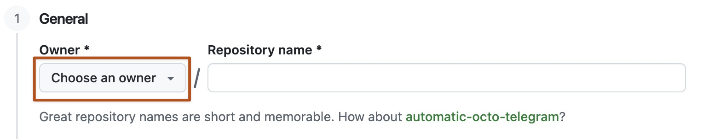

You can create a GitHub Pages site in a new or existing repository.
Creating a repository for your site
You can either create a repository or choose an existing repository for your site.
If you want to create a GitHub Pages site for a repository where not all of the files in the repository are related to the site, you will be able to configure a publishing source for your site. For example, you can have a dedicated branch and folder to hold your site source files, or you can use a custom GitHub Actions workflow to build and deploy your site source files.
If the account that owns the repository uses GitHub Free or GitHub Free for organizations, the repository must be public.
If you want to create a site in an existing repository, skip to the Creating your site section.
In the upper-right corner of any page, select , then click New repository.
Use the Owner dropdown menu to select the account you want to own the repository.

Type a name for your repository and an optional description. If you're creating a user or organization site, your repository must be named <user>.github.io or <organization>.github.io. If your user or organization name contains uppercase letters, you must lowercase the letters.
For more information, see What is GitHub Pages?.
Choose a repository visibility. For more information, see About repositories.
Toggle Add README to On.
Click Create repository.
Creating your site
Before you can create your site, you must have a repository for your site on GitHub. If you're not creating your site in an existing repository, see Creating a repository for your site.
Warning
GitHub Pages sites are publicly available on the internet, even if the repository for the site is private (if your plan or organization allows it). If you have sensitive data in your site's repository, you may want to remove the data before publishing. For more information, see About repositories.
Create the entry file for your site. GitHub Pages will look for an index.html, index.md, or README.md file as the entry file for your site.
If your publishing source is a branch and folder, the entry file must be at the top level of the source folder on the source branch. For example, if your publishing source is the /docs folder on the main branch, your entry file must be located in the /docs folder on a branch called main.
If your publishing source is a GitHub Actions workflow, the artifact that you deploy must include the entry file at the top level of the artifact. Instead of adding the entry file to your repository, you may choose to have your GitHub Actions workflow generate your entry file when the workflow runs.
Your GitHub Pages site is built and deployed with a GitHub Actions workflow. For more information, see Viewing workflow run history.
Note
GitHub Actions is free for public repositories. Usage charges apply for private and internal repositories that go beyond the monthly allotment of free minutes. For more information, see Billing and usage.
Viewing your published site
Under your repository name, click Settings. If you cannot see the "Settings" tab, select the dropdown menu, then click Settings.
In the "Code and automation" section of the sidebar, click Pages.
To see your published site, under "GitHub Pages," click Visit site.
Note
It can take up to 10 minutes for changes to your site to publish after you push the changes to GitHub. If you don't see your GitHub Pages site changes reflected in your browser after an hour, see About Jekyll build errors for GitHub Pages sites.
[!NOTE]
If you are publishing from a branch and your site has not published automatically, make sure someone with admin permissions and a verified email address has pushed to the publishing source.
Commits pushed by a GitHub Actions workflow that uses the GITHUB_TOKEN do not trigger a GitHub Pages build.
Static site generators
GitHub Pages publishes any static files that you push to your repository. You can create your own static files or use a static site generator to build your site for you. You can also customize your own build process locally or on another server.
If you use a custom build process or a static site generator other than Jekyll, you can write a GitHub Actions workflow to build and publish your site. GitHub provides workflow templates for several static site generators. For more information, see Configuring a publishing source for your GitHub Pages site.
If you publish your site from a source branch, GitHub Pages will use Jekyll to build your site by default. If you want to use a static site generator other than Jekyll, we recommend that you write a GitHub Actions to build and publish your site instead. Otherwise, disable the Jekyll build process by creating an empty file called .nojekyll in the root of your publishing source, then follow your static site generator's instructions to build your site locally.
Note
GitHub Pages does not support server-side languages such as PHP, Ruby, or Python.
MIME types on GitHub Pages
A MIME type is a header that a server sends to a browser, providing information about the nature and format of the files the browser requested. GitHub Pages supports more than 750 MIME types across thousands of file extensions. The list of supported MIME types is generated from the mime-db project.
While you can't specify custom MIME types on a per-file or per-repository basis, you can add or modify MIME types for use on GitHub Pages. For more information, see the mime-db contributing guidelines.
Next steps
You can add more pages to your site by creating more new files. Each file will be available on your site in the same directory structure as your publishing source. For example, if the publishing source for your project site is the gh-pages branch, and you create a new file called /about/contact-us.md on the gh-pages branch, the file will be available at https://<user>.github.io/<repository>/about/contact-us.html.